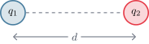
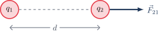
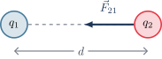
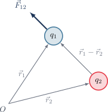
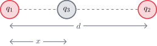
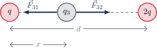

Ley de Coulomb#
La interacción entre cargas eléctricas se rige por los siguientes principios fundamentales:
Tipos de carga: Existen dos tipos de cargas, positivas y negativas.
Interacción a distancia: Dos cargas interactúan con una fuerza cuya magnitud es inversamente proporcional al cuadrado de la distancia \(d\) que las separa.
Proporcionalidad: Esta fuerza es directamente proporcional al producto de las magnitudes de las cargas (\(q_1, q_2\)).
{kind=link}

Comportamiento de las fuerzas#
Cargas de igual signo: Se repelen. La fuerza \(\vec{F}_{21}\) apunta hacia afuera de la línea que une las cargas.
{kind=link}

Cargas de distinto signo: Se atraen. La fuerza \(\vec{F}_{21}\) apunta hacia la carga opuesta.
{kind=link}

Formulación Matemática (Escalar)#
La magnitud de la fuerza de Coulomb se define como:
Donde las constantes fundamentales son:
Constante de Coulomb (\(k\)): \(k = 8{,}98755 \times 10^9 \ \frac{\text{N}\cdot\text{m}^2}{\text{C}^2} \approx 9 \times 10^9 \ \frac{\text{N}\cdot\text{m}^2}{\text{C}^2}\)
Permitividad del vacío (\(\epsilon_0\)): \(\epsilon_0 = 8{,}854 \times 10^{-12} \ \frac{\text{C}^2}{\text{N}\cdot\text{m}^2}\)
Formulación Vectorial#
Para un análisis preciso en el espacio, definimos la fuerza que la carga \(2\) ejerce sobre la carga \(1\) (\(\vec{F}_{12}\)) utilizando vectores de posición \(\vec{r}_1\) y \(\vec{r}_2\):
{kind=link}

Principio de Superposición (Cargas Discretas)#
Si tenemos un sistema de \(N\) cargas puntuales, la fuerza total resultante sobre una carga \(q_1\) es la suma vectorial de las fuerzas individuales ejercidas por el resto de las cargas:
En términos generales:
Nota: Este análisis es válido estrictamente para distribuciones de cargas puntuales.
Problema: Equilibrio de fuerzas eléctricas#
Considere dos cargas eléctricas puntuales, \(q_1 = +q\) y \(q_2 = +2q\), separadas por una distancia \(d\).
{kind=link}

Se desea encontrar la posición exacta en la que una tercera carga \(q_3\) debe ser colocada a lo largo de la línea que une \(q_1\) y \(q_2\), de modo que la fuerza eléctrica neta sobre \(q_3\) sea cero. Es decir, que las fuerzas ejercidas por \(q_1\) y \(q_2\) sobre \(q_3\) se cancelen mutuamente.
🌐 Simulación: Cargas y Campos de PhET#
Para fortalecer tu intuición física, utilizaremos la simulación que está a continuación:
Show code cell source
from IPython.display import display, HTML
phet_iframe = """
<div style="width: 100%; text-align: center; margin-bottom: 20px;">
<iframe src="https://phet.colorado.edu/sims/html/charges-and-fields/latest/charges-and-fields_es.html"
width="100%"
height="500"
scrolling="no"
allowfullscreen>
</iframe>
</div>
"""
display(HTML(phet_iframe))
Sigue estos pasos para experimentar con los conceptos de equilibrio:
Colocar cargas: Arrastra y suelta cargas positivas y negativas en el espacio de trabajo. Puedes representar la relación del problema original colocando una carga de \(+1\text{ nC}\) para \(q_1\) y dos cargas superpuestas (o una de \(+2\text{ nC}\)) para \(q_2\).
Colocar carga de prueba (\(q_3\)): Utiliza el sensor amarillo (carga de prueba) y desplázalo por el escenario. Al moverlo, la simulación mostrará vectores que representan la intensidad y dirección del campo (o fuerza) en ese punto.
Visualizar fuerzas: Observa cómo los vectores cambian de magnitud y dirección según la cercanía a \(q_1\) y \(q_2\). Esto te permitirá ver gráficamente la influencia de cada carga sobre \(q_3\).
Encontrar el punto de equilibrio: Tu objetivo es mover la carga de prueba hasta que el vector de fuerza neta desaparezca o se haga lo más pequeño posible. Este es el punto de equilibrio donde las fuerzas se cancelan.
Explorar escenarios:
Cambio de signos: Cambia la polaridad de \(q_1\) y \(q_2\) para observar cómo el punto de equilibrio se desplaza fuera de la región central.
Cambio de magnitudes: Modifica los valores de las cargas fuente para ver cómo el punto de equilibrio se “aleja” de la carga más intensa.
Preguntas de Comprensión#
Show code cell source
from IPython.display import display, HTML
# Código ajustado con las nuevas preguntas de comprensión de la Ley de Coulomb
quiz_html_coulomb = """
<style>
.fisi-quiz-container {
border: 1px solid #e0e0e0;
padding: 15px;
margin-bottom: 25px;
border-radius: 8px;
background-color: #f8f9fa;
font-family: -apple-system, BlinkMacSystemFont, "Segoe UI", Roboto, Arial, sans-serif;
}
.fisi-question {
font-weight: 600;
margin-bottom: 15px;
color: #2c3e50;
}
.fisi-option {
margin-bottom: 10px;
display: flex;
align-items: flex-start;
cursor: pointer;
}
.fisi-option input {
margin-top: 4px;
margin-right: 10px;
}
.fisi-check-btn {
background-color: #f73bc5;
color: white;
border: none;
padding: 8px 20px;
border-radius: 4px;
cursor: pointer;
font-size: 14px;
margin-top: 10px;
font-weight: 500;
}
.fisi-check-btn:hover { background-color: #ab2988; }
.fisi-feedback {
margin-top: 15px;
padding: 12px;
border-radius: 6px;
display: none;
font-size: 0.95em;
}
</style>
<div class="fisi-quiz-container" id="quiz-coulomb-1">
<div class="fisi-question">
1. ¿En qué región a lo largo de la línea que une <i>q</i><sub>1</sub> y <i>q</i><sub>2</sub> debe ubicarse la carga <i>q</i><sub>3</sub> para que la fuerza neta sobre ella sea cero, considerando que <i>q</i><sub>1</sub> = +<i>q</i> y <i>q</i><sub>2</sub> = +2<i>q</i>?
</div>
<label class="fisi-option">
<input type="radio" name="qc1" value="a" data-fb="Incorrecto. A la izquierda de ambas cargas, las dos fuerzas apuntarían hacia la izquierda (repulsión), por lo que se sumarían en lugar de cancelarse.">
<span>A la izquierda de <i>q</i><sub>1</sub></span>
</label>
<label class="fisi-option">
<input type="radio" name="qc1" value="b" data-fb="Incorrecto. A la derecha de ambas cargas, las dos fuerzas apuntarían hacia la derecha, sumándose.">
<span>A la derecha de <i>q</i><sub>2</sub></span>
</label>
<label class="fisi-option">
<input type="radio" name="qc1" value="c" data-correct="true" data-fb="¡Correcto! Como ambas cargas tienen el mismo signo, las fuerzas solo pueden tener sentidos opuestos si la carga de prueba se coloca entre ellas.">
<span>Entre <i>q</i><sub>1</sub> y <i>q</i><sub>2</sub></span>
</label>
<label class="fisi-option">
<input type="radio" name="qc1" value="d" data-fb="Incorrecto. El equilibrio depende de la posición relativa y las magnitudes de las fuentes, no de que q3 sea cero.">
<span>En cualquier punto, ya que la magnitud de <i>q</i><sub>3</sub> es cero</span>
</label>
<button class="fisi-check-btn" id="btn-check-c1">Comprobar</button>
<div class="fisi-feedback" id="feedback-c1"></div>
</div>
<div class="fisi-quiz-container" id="quiz-coulomb-2">
<div class="fisi-question">
2. Si la carga <i>q</i><sub>3</sub> es colocada entre <i>q</i><sub>1</sub> y <i>q</i><sub>2</sub>, ¿cuál es la dirección de la fuerza <b>F</b><sub>31</sub> (de <i>q</i><sub>1</sub> sobre <i>q</i><sub>3</sub>) y <b>F</b><sub>32</sub> (de <i>q</i><sub>2</sub> sobre <i>q</i><sub>3</sub>)?
</div>
<label class="fisi-option">
<input type="radio" name="qc2" value="a" data-fb="Incorrecto. Esto significaría que una carga atrae y la otra repele desde el mismo lado.">
<span>Ambas apuntan hacia la derecha</span>
</label>
<label class="fisi-option">
<input type="radio" name="qc2" value="b" data-fb="Incorrecto. Las fuerzas deben ser opuestas para que exista equilibrio.">
<span>Ambas apuntan hacia la izquierda</span>
</label>
<label class="fisi-option">
<input type="radio" name="qc2" value="c" data-correct="true" data-fb="Muy bien. <i>q</i><sub>1</sub> (a la izquierda) empuja hacia la derecha y <i>q</i><sub>2</sub> (a la derecha) empuja hacia la izquierda. Esta oposición es la que permite el equilibrio.">
<span><b>F</b><sub>31</sub> apunta hacia la derecha y <b>F</b><sub>32</sub> apunta hacia la izquierda</span>
</label>
<label class="fisi-option">
<input type="radio" name="qc2" value="d" data-fb="Incorrecto. Eso ocurriría si las cargas estuvieran en posiciones invertidas.">
<span><b>F</b><sub>31</sub> apunta hacia la izquierda y <b>F</b><sub>32</sub> apunta hacia la derecha</span>
</label>
<button class="fisi-check-btn" id="btn-check-c2">Comprobar</button>
<div class="fisi-feedback" id="feedback-c2"></div>
</div>
<div class="fisi-quiz-container" id="quiz-coulomb-3">
<div class="fisi-question">
3. Para que la fuerza neta sobre <i>q</i><sub>3</sub> sea cero, ¿qué condición deben cumplir las magnitudes de las fuerzas <b>F</b><sub>31</sub> y <b>F</b><sub>32</sub>?
</div>
<label class="fisi-option">
<input type="radio" name="qc3" value="a" data-fb="No. Si una magnitud es mayor que la otra, la carga se acelerará hacia la fuerza dominante.">
<span>F<sub>31</sub> > F<sub>32</sub></span>
</label>
<label class="fisi-option">
<input type="radio" name="qc3" value="b" data-fb="No. Si una magnitud es menor, no se lograría la anulación vectorial.">
<span>F<sub>31</sub> < F<sub>32</sub></span>
</label>
<label class="fisi-option">
<input type="radio" name="qc3" value="c" data-correct="true" data-fb="Exacto. Para que la suma vectorial de dos fuerzas colineales y opuestas sea cero, sus magnitudes deben ser idénticas.">
<span>F<sub>31</sub> = F<sub>32</sub></span>
</label>
<button class="fisi-check-btn" id="btn-check-c3">Comprobar</button>
<div class="fisi-feedback" id="feedback-c3"></div>
</div>
<script>
(function() {
function setupQuiz(btnId, radioName, feedbackId) {
var btn = document.getElementById(btnId);
if (!btn) return;
btn.addEventListener('click', function() {
var radios = document.getElementsByName(radioName);
var selected = null;
var feedbackDiv = document.getElementById(feedbackId);
for (var i = 0; i < radios.length; i++) {
if (radios[i].checked) {
selected = radios[i];
break;
}
}
feedbackDiv.style.display = 'block';
if (!selected) {
feedbackDiv.style.backgroundColor = '#fff3cd';
feedbackDiv.style.color = '#856404';
feedbackDiv.style.border = '1px solid #ffeeba';
feedbackDiv.innerHTML = '⚠️ Por favor, selecciona una opción.';
return;
}
var isCorrect = selected.getAttribute('data-correct') === 'true';
var msg = selected.getAttribute('data-fb');
if (isCorrect) {
feedbackDiv.style.backgroundColor = '#d4edda';
feedbackDiv.style.color = '#155724';
feedbackDiv.style.border = '1px solid #c3e6cb';
feedbackDiv.innerHTML = '✅ <strong>¡Correcto!</strong><br>' + msg;
} else {
feedbackDiv.style.backgroundColor = '#f8d7da';
feedbackDiv.style.color = '#721c24';
feedbackDiv.style.border = '1px solid #f5c6cb';
feedbackDiv.innerHTML = '❌ <strong>Incorrecto.</strong><br>' + msg;
}
});
}
setTimeout(function() {
setupQuiz('btn-check-c1', 'qc1', 'feedback-c1');
setupQuiz('btn-check-c2', 'qc2', 'feedback-c2');
setupQuiz('btn-check-c3', 'qc3', 'feedback-c3');
}, 500);
})();
</script>
"""
display(HTML(quiz_html_coulomb))
Show code cell source
from IPython.display import display, HTML
quiz_numerico_html = """
<div class="fisi-quiz-container" id="quiz-num-1">
<div class="fisi-question">
4. <b>Desafío Analítico:</b> Si la distancia entre las cargas es <i>d</i> = 1.0 m, calcula el valor exacto de la posición <i>x</i> (medida desde <i>q</i><sub>1</sub>) donde <i>q</i><sub>3</sub> está en equilibrio.
<br><small>(Ingresa el valor con tres decimales, ej: 0.500)</small>
</div>
<div style="margin-bottom: 15px;">
<input type="text" id="input-ans-1" placeholder="0.000" style="padding: 8px; border-radius: 4px; border: 1px solid #ccc; width: 100px;">
<span style="font-weight: 500;"> m</span>
</div>
<button class="fisi-check-btn" id="btn-check-num">Verificar Resultado</button>
<div class="fisi-feedback" id="feedback-num"></div>
</div>
<script>
(function() {
var btn = document.getElementById('btn-check-num');
btn.addEventListener('click', function() {
var input = document.getElementById('input-ans-1').value;
var feedbackDiv = document.getElementById('feedback-num');
var val = parseFloat(input.replace(',', '.')); // Acepta coma o punto
feedbackDiv.style.display = 'block';
// Valor teórico: 1 / (1 + sqrt(2)) ≈ 0.414
var target = 0.414;
var tolerancia = 0.01;
if (isNaN(val)) {
feedbackDiv.style.backgroundColor = '#fff3cd';
feedbackDiv.innerHTML = '⚠️ Por favor, ingresa un número válido.';
return;
}
if (Math.abs(val - target) <= tolerancia) {
feedbackDiv.style.backgroundColor = '#d4edda';
feedbackDiv.style.color = '#155724';
feedbackDiv.innerHTML = '✅ <b>¡Excelente!</b> El valor es aproximadamente 0.414 m. <br>Derivaste correctamente: <i>x = d / (1 + √(q₂/q₁))</i>.';
} else {
feedbackDiv.style.backgroundColor = '#f8d7da';
feedbackDiv.style.color = '#721c24';
feedbackDiv.innerHTML = '❌ <b>Casi...</b> Revisa el álgebra. Recuerda que al igualar las fuerzas y simplificar <i>k, q₁ y q₃</i>, debes resolver para <i>x</i> considerando que √(2) ≈ 1.414.';
}
});
})();
</script>
"""
display(HTML(quiz_numerico_html))
(Ingresa el valor con tres decimales, ej: 0.500)
Solución#
Para que la fuerza neta sobre la carga \(q_3\) sea nula, la fuerza ejercida por \(q_1\) sobre \(q_3\) (\(\vec{F}_{31}\)) y la fuerza ejercida por \(q_2\) sobre \(q_3\) (\(\vec{F}_{32}\)) deben ser de igual magnitud y dirección opuesta. Dado que \(q_1\) y \(q_2\) son ambas cargas positivas, la carga \(q_3\) debe colocarse entre ellas para que las fuerzas sean de repulsión y apunten en direcciones opuestas, permitiendo su anulación.
{kind=link}

Sea \(x\) la distancia desde \(q_1\) hasta \(q_3\). Entonces, la distancia desde \(q_2\) hasta \(q_3\) será \(d-x\).
La magnitud de la fuerza entre dos cargas se rige por la Ley de Coulomb:
donde \(k = \frac{1}{4\pi\epsilon_0}\) es la constante de Coulomb.
Para que la fuerza neta sobre \(q_3\) sea cero, las magnitudes de las fuerzas \(\vec{F}_{31}\) y \(\vec{F}_{32}\) deben ser iguales:
Podemos cancelar la constante \(k\) y la magnitud de la carga \(q_3\) de ambos lados:
Sustituyendo los valores de las cargas \(q_1 = +q\) y \(q_2 = +2q\):
Cancelando \(q\):
Reorganizando la ecuación:
Tomando la raíz cuadrada de ambos lados:
Consideramos las dos posibles soluciones:
Caso 1: \(d-x = \sqrt{2}x\)#
Para racionalizar el denominador, multiplicamos por el conjugado \((\sqrt{2}-1)\):
Este valor de \(x\) es positivo y menor que \(d\) (\(\sqrt{2} \approx 1{,}414\), por lo que \(\sqrt{2}-1 \approx 0{,}414\)), lo cual indica que la carga \(q_3\) se encuentra entre \(q_1\) y \(q_2\), lo cual es consistente con nuestra predicción inicial para cargas de igual signo.
Caso 2: \(d-x = -\sqrt{2}x\)#
Este valor de \(x\) sería negativo (ya que \(1 - \sqrt{2}\) es negativo). Un valor negativo de \(x\) implicaría que \(q_3\) se encuentra a la izquierda de \(q_1\). En esa posición, las fuerzas de \(q_1\) y \(q_2\) sobre \(q_3\) (ambas repulsivas, ya que \(q_1\) y \(q_2\) son positivas) apuntarían en la misma dirección (hacia la izquierda), por lo que no podrían cancelarse. Por lo tanto, esta solución no es físicamente válida para el problema.
Conclusión:#
La posición donde la fuerza eléctrica neta sobre la carga \(q_3\) es cero es a una distancia de \(x = (\sqrt{2}-1)d\) a partir de la carga \(q_1\).
Preguntas de Análisis#
Show code cell source
from IPython.display import display, HTML
# Usamos HTML nativo (<i>, <sub>) para las matemáticas
# y JavaScript encapsulado (sin funciones globales) para evitar errores.
quiz_html_robust = """
<style>
.fisi-quiz-container {
border: 1px solid #e0e0e0;
padding: 15px;
margin-bottom: 25px;
border-radius: 8px;
background-color: #f8f9fa;
font-family: -apple-system, BlinkMacSystemFont, "Segoe UI", Roboto, Arial, sans-serif;
}
.fisi-question {
font-weight: 600;
margin-bottom: 15px;
color: #2c3e50;
}
.fisi-option {
margin-bottom: 10px;
display: flex;
align-items: flex-start;
cursor: pointer;
}
.fisi-option input {
margin-top: 4px;
margin-right: 10px;
}
.fisi-check-btn {
background-color: #f73bc5;
color: white;
border: none;
padding: 8px 20px;
border-radius: 4px;
cursor: pointer;
font-size: 14px;
margin-top: 10px;
font-weight: 500;
}
.fisi-check-btn:hover { background-color: #ab2988; }
.fisi-feedback {
margin-top: 15px;
padding: 12px;
border-radius: 6px;
display: none; /* Oculto por defecto */
font-size: 0.95em;
}
</style>
<div class="fisi-quiz-container" id="quiz-block-1">
<div class="fisi-question">
1. Si en el problema original la carga <i>q</i><sub>1</sub> fuera +<i>q</i> y la carga <i>q</i><sub>2</sub> fuera -2<i>q</i> (manteniendo la misma distancia <i>d</i>), ¿dónde debería ubicarse <i>q</i><sub>3</sub> para que la fuerza neta sea cero?
</div>
<label class="fisi-option">
<input type="radio" name="q1" value="a" data-fb="Incorrecto. Entre cargas de signo opuesto las fuerzas se suman (ambas empujan o tiran hacia el mismo lado), no se cancelan.">
<span>Entre <i>q</i><sub>1</sub> y <i>q</i><sub>2</sub></span>
</label>
<label class="fisi-option">
<input type="radio" name="q1" value="b" data-correct="true" data-fb="Muy bien. Al tener signos opuestos, el equilibrio está fuera del segmento. Como |<i>q</i><sub>1</sub>| < |<i>q</i><sub>2</sub>|, debe estar más cerca de la carga menor para compensar la distancia.">
<span>A la izquierda de <i>q</i><sub>1</sub></span>
</label>
<label class="fisi-option">
<input type="radio" name="q1" value="c" data-fb="Incorrecto. Estaría más cerca de la carga mayor (2<i>q</i>), por lo que su fuerza dominaría siempre.">
<span>A la derecha de <i>q</i><sub>2</sub></span>
</label>
<button class="fisi-check-btn" id="btn-check-1">Comprobar</button>
<div class="fisi-feedback" id="feedback-1"></div>
</div>
<div class="fisi-quiz-container" id="quiz-block-2">
<div class="fisi-question">
2. Si la carga <i>q</i><sub>3</sub> está en equilibrio y duplicamos la magnitud de <i>q</i><sub>1</sub> a +2<i>q</i> (manteniendo <i>q</i><sub>2</sub> = +2<i>q</i>), ¿hacia dónde apuntará la fuerza neta sobre <i>q</i><sub>3</sub>?
</div>
<label class="fisi-option">
<input type="radio" name="q2" value="a" data-fb="Falso. El equilibrio original dependía de que las cargas fueran distintas. Al cambiar una magnitud, se rompe el equilibrio.">
<span>La fuerza neta seguirá siendo cero</span>
</label>
<label class="fisi-option">
<input type="radio" name="q2" value="b" data-fb="Incorrecto. La fuerza de <i>q</i><sub>2</sub> (que empuja hacia la izquierda) no ha aumentado, pero la de <i>q</i><sub>1</sub> (que empuja a la derecha) sí.">
<span>Hacia <i>q</i><sub>1</sub> (Izquierda)</span>
</label>
<label class="fisi-option">
<input type="radio" name="q2" value="c" data-correct="true" data-fb="Correcto. La repulsión desde <i>q</i><sub>1</sub> aumenta y vence a la de <i>q</i><sub>2</sub>, resultando en una fuerza neta hacia la derecha.">
<span>Hacia <i>q</i><sub>2</sub> (Derecha)</span>
</label>
<button class="fisi-check-btn" id="btn-check-2">Comprobar</button>
<div class="fisi-feedback" id="feedback-2"></div>
</div>
<div class="fisi-quiz-container" id="quiz-block-3">
<div class="fisi-question">
3. Si cambiamos el signo de <i>q</i><sub>3</sub> (de positivo a negativo), ¿cómo afecta esto a la posición de equilibrio calculada?
</div>
<label class="fisi-option">
<input type="radio" name="q3" value="a" data-fb="No. La posición geométrica del equilibrio no depende del signo de la carga de prueba.">
<span>Se desplaza hacia <i>q</i><sub>1</sub></span>
</label>
<label class="fisi-option">
<input type="radio" name="q3" value="b" data-correct="true" data-fb="Exacto. Matemáticamente <i>q</i><sub>3</sub> se cancela de la ecuación. Físicamente, las fuerzas se invierten pero siguen anulándose en el mismo punto.">
<span>La posición de equilibrio no se ve afectada</span>
</label>
<label class="fisi-option">
<input type="radio" name="q3" value="c" data-fb="No. La posición geométrica del equilibrio no depende del signo de la carga de prueba.">
<span>Se desplaza hacia <i>q</i><sub>2</sub></span>
</label>
<button class="fisi-check-btn" id="btn-check-3">Comprobar</button>
<div class="fisi-feedback" id="feedback-3"></div>
</div>
<script>
// Esta función se ejecuta automáticamente al cargar el HTML
(function() {
function setupQuiz(btnId, radioName, feedbackId) {
var btn = document.getElementById(btnId);
if (!btn) return; // Si no encuentra el botón, sale
btn.addEventListener('click', function() {
var radios = document.getElementsByName(radioName);
var selected = null;
var feedbackDiv = document.getElementById(feedbackId);
// Buscar cuál radio está marcado
for (var i = 0; i < radios.length; i++) {
if (radios[i].checked) {
selected = radios[i];
break;
}
}
feedbackDiv.style.display = 'block';
if (!selected) {
feedbackDiv.style.backgroundColor = '#fff3cd'; // Amarillo
feedbackDiv.style.color = '#856404';
feedbackDiv.style.border = '1px solid #ffeeba';
feedbackDiv.innerHTML = '⚠️ Por favor, selecciona una opción.';
return;
}
var isCorrect = selected.getAttribute('data-correct') === 'true';
var msg = selected.getAttribute('data-fb');
if (isCorrect) {
feedbackDiv.style.backgroundColor = '#d4edda'; // Verde
feedbackDiv.style.color = '#155724';
feedbackDiv.style.border = '1px solid #c3e6cb';
feedbackDiv.innerHTML = '✅ <strong>¡Correcto!</strong><br>' + msg;
} else {
feedbackDiv.style.backgroundColor = '#f8d7da'; // Rojo
feedbackDiv.style.color = '#721c24';
feedbackDiv.style.border = '1px solid #f5c6cb';
feedbackDiv.innerHTML = '❌ <strong>Incorrecto.</strong><br>' + msg;
}
});
}
// Configurar cada pregunta individualmente
// Esperamos un pequeño momento para asegurar que el DOM existe
setTimeout(function() {
setupQuiz('btn-check-1', 'q1', 'feedback-1');
setupQuiz('btn-check-2', 'q2', 'feedback-2');
setupQuiz('btn-check-3', 'q3', 'feedback-3');
}, 500);
})();
</script>
"""
display(HTML(quiz_html_robust))